Articles & Techniques
Free practical guides and audio techniques
Practical CBT writing on anxiety, perfectionism, mood, and the patterns underneath. Written to be useful whether you’re thinking about therapy or already in it.
By Jack Wells
Programmes
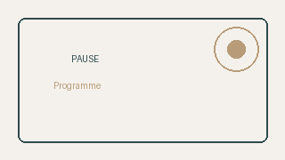
Practical Awareness Using Simple Exercises
PAUSE is a free introductory mindfulness course founded in psychoeducation and simple exercises.
Free course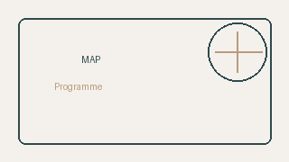
Meaningful Activation Programme
Six structured modules informed by CBT and founded in psychological research on meaning in life.
Free courseAll articles
Procrastination: when avoiding the task is the task
Why procrastination is rarely laziness, and how CBT addresses the patterns underneath.
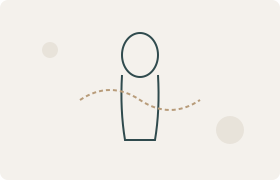
When worry shows up in your body
Why anxiety often presents physically before it becomes mental, and what CBT does about somatic symptoms.
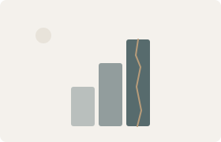
Anxiety in high-functioning adults
Why high-functioning anxiety is invisible from outside, and what CBT does about it.
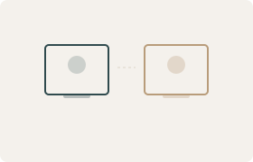
Online CBT vs in-person
What the research actually says, and the practical considerations when you’re deciding.
Is it time for therapy?
A practical, honest guide to deciding whether what you’re dealing with is the kind of thing therapy can help.
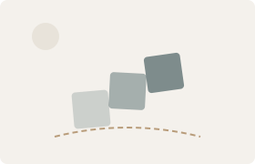
Adjustment: when life changes faster than you can settle
What adjustment difficulty actually is, and how CBT helps you find ground after a major change.
Specific phobias: why “just face the fear” usually fails
Why pushing through a phobia tends to backfire, and how graded exposure does the same job differently.
Anger: when the response feels bigger than the situation
Why “letting it out” doesn’t reliably help, what’s usually underneath, and what CBT does.
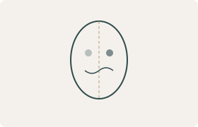
The harsh inner critic
Why the inner voice that drives you also wears you down, and how CBT changes the relationship.
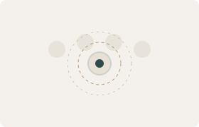
Social anxiety: when other people feel like a threat
How self-focused attention and post-event analysis quietly maintain social anxiety.
Performance anxiety and the avoidance paradox
Why pressure makes you put off preparing, and how CBT addresses the pattern underneath.
Intrusive thoughts: what OCD really looks like
Why everyone has intrusive thoughts, what tips them into OCD, and how ERP breaks the cycle.
Living with overthinking
Why worry feels productive even when it isn’t, and how CBT changes the relationship.
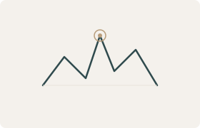
Panic attacks: what is actually happening
Why panic feels life-threatening but isn’t, and how CBT addresses the fear of fear.
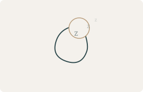
When sleep stops working: a CBT approach to insomnia
Why trying harder to sleep almost always backfires, and what CBT-I does about it.
Burnout: when the system that used to work stops working
How burnout actually presents, why pushing through makes it worse, and what CBT does.
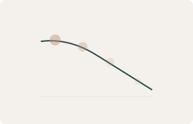
Low mood and the drift into doing less
Why low mood narrows what we do, and how CBT rebuilds momentum from the smallest starting point.
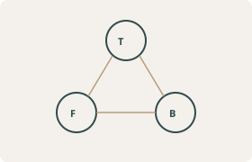
How CBT actually works: a research-based explanation
The evidence behind cognitive behavioural therapy and why it works for anxiety and mood problems.
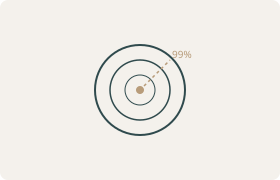
Is perfectionism holding you back?
How to recognise when high standards tip into self-sabotage — and what to do about it.
Understanding health anxiety
Why our minds get stuck on physical symptoms and how CBT can help break the cycle.
Free Tools
CBT Toolkit
Interactive exercises you can work through on your own. Record a thought, spot thinking traps, or plan an experiment.
Open the toolkitReady to take the next step?
If you’d like to discuss whether CBT is right for you, book a free 15-minute consultation — no commitment required.